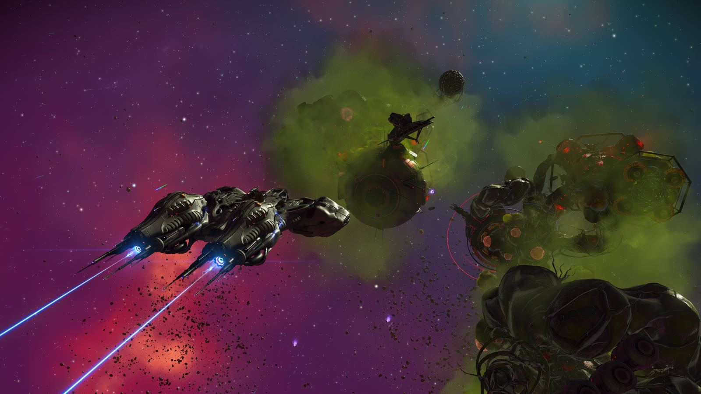
Explora el lado más oscuro del universo: mercaderes misteriosos que cambian recuerdos macabros por módulos biomecánicos para tu corbeta, nuevas cabinas, misiones de mensajería en el espacio profundo y la llegada del juego completo a iOS.
Novedades
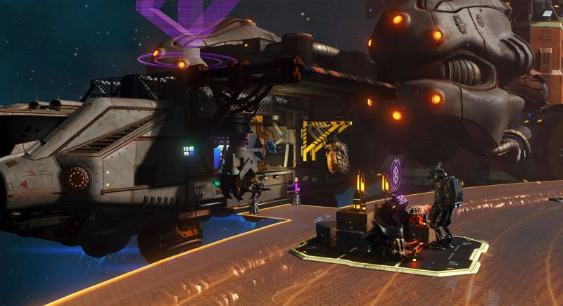
Comerciantes Forsaken
Misteriosos mercaderes que aparecen en las avanzadas espaciales. Aceptan recuerdos a cambio de módulos únicos para tu corbeta.
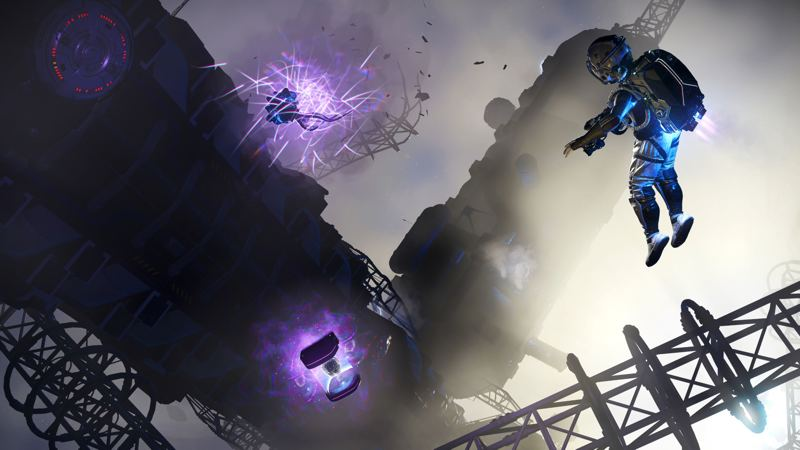
Recuerdos macabros
Muestras biológicas escondidas en naves destrozadas, avanzadas infestadas, cargueros abandonados y yacimientos paleontológicos. Atraerlos tiene un precio: los horrores del límite te vigilan.
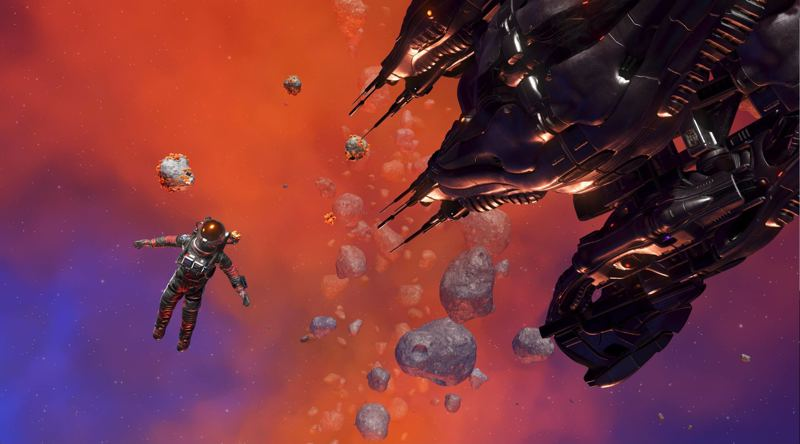
Casco Larva Tank
Un casco con una larva parasitaria dentro. Se consigue por tu dedicación a recolectar recuerdos, junto con el título «Mind Harvester».
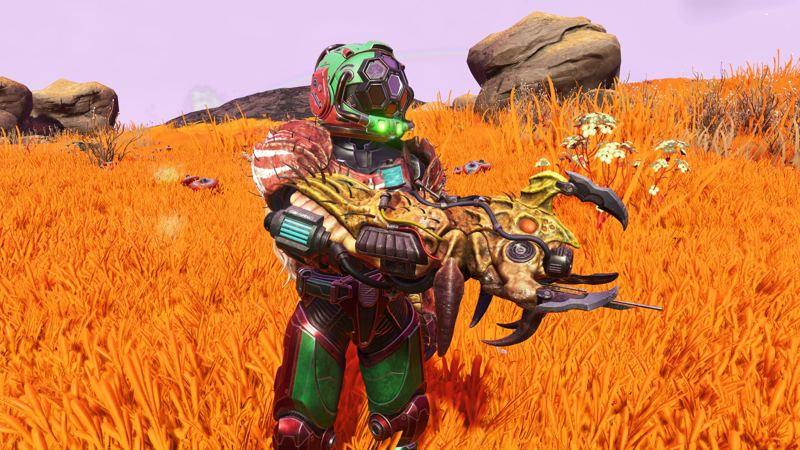
Cañón de larvas
Nueva multiherramienta con exoesqueleto larval que se obtiene a cambio de larvas conservadas.
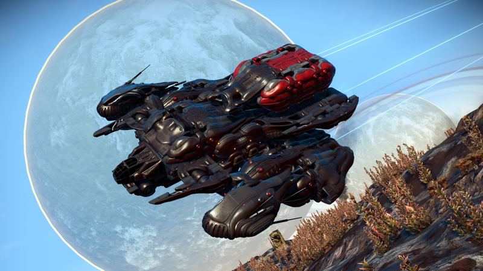
Módulos siniestros
Una gran variedad de piezas biomecánicas para tu corbeta: estructuras de casco, habitaciones y más, de aspecto inquietante.
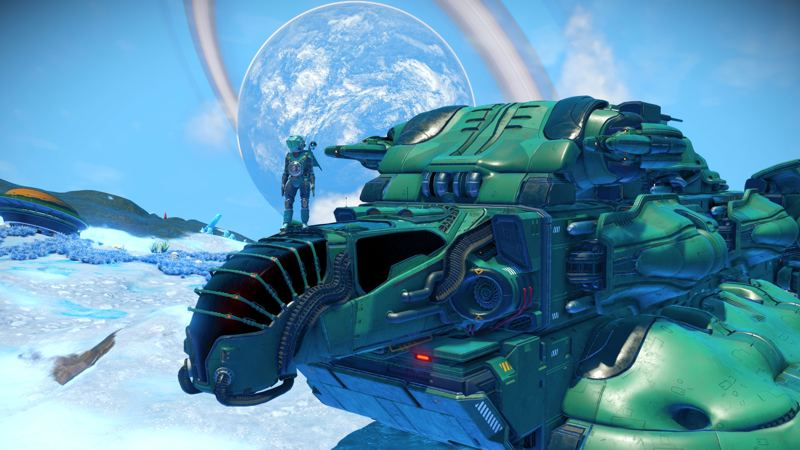
Cabinas Vantage y Hornet
La Vantage es ultra ancha, con vista panorámica y un interior minimalista. La Hornet es segmentada, de aspecto insectoide y con tres variantes.
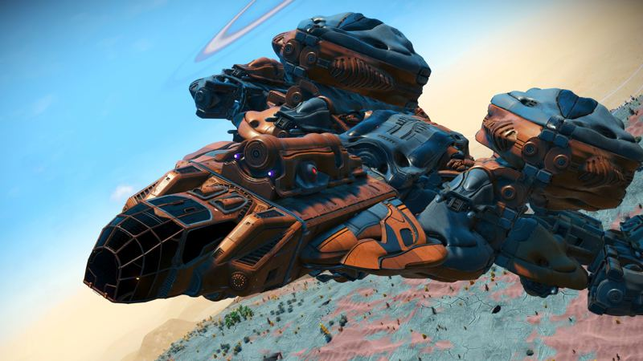
Cabinas Viper y Mantis
La Viper lleva paneles de cuero y una «cabeza de serpiente»; la Mantis, paneles cuadrados y barras de titanio. Cada una en tres variantes.
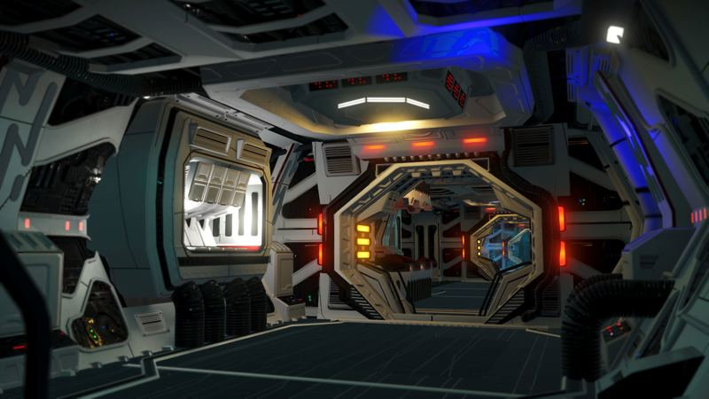
Interiores Legion
Habitaciones de estilo utilitario, con techos bajos, luces empotradas y ángulos marcados.
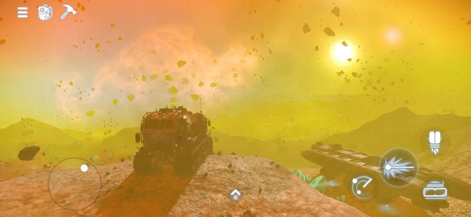
Llega a iOS
La experiencia completa de No Man’s Sky en iPhone y iPad, con interfaz táctil y un motor optimizado para cuidar la batería.
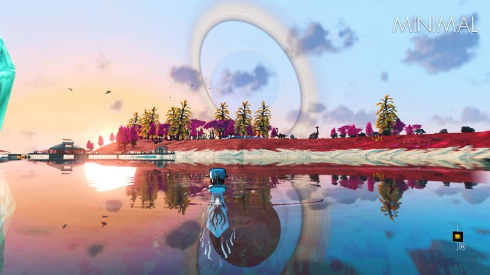
Modo HUD mínimo
Oculta la brújula, las barras de protección, los avisos de misión y los marcadores no esenciales para jugar con la pantalla limpia.
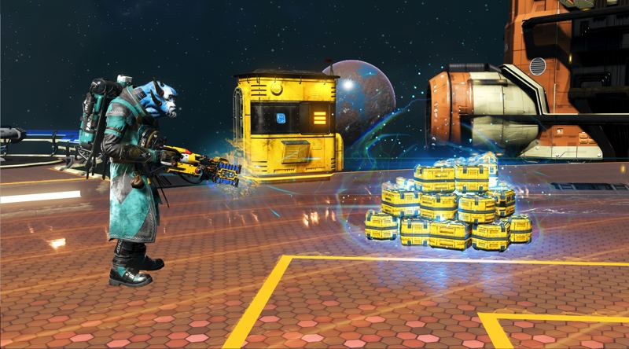
Misiones de mensajería
Contratos de transporte de larga distancia desde las avanzadas espaciales: entrega los paquetes sanos y salvos.
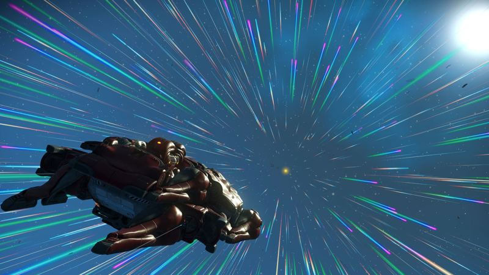
Salto estelar continuo
Selecciona una estrella cercana directamente desde el espacio y viaja hasta ella sin abrir el mapa galáctico.
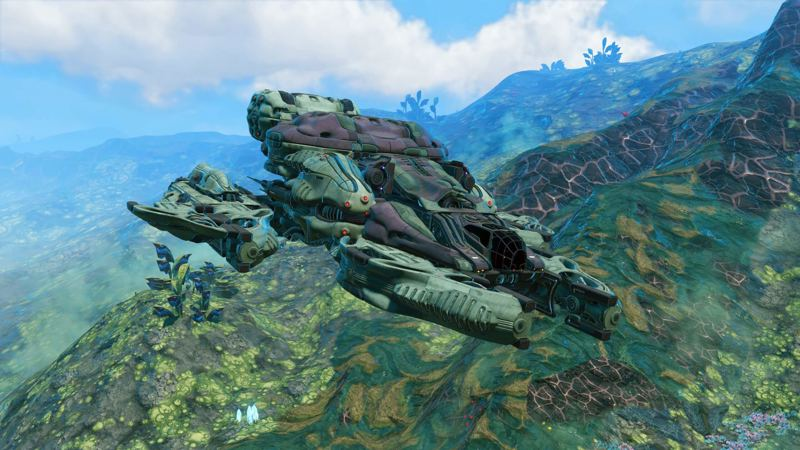
Rueda de armas
Un selector radial para cambiar rápido entre las armas y utilidades de la multiherramienta.
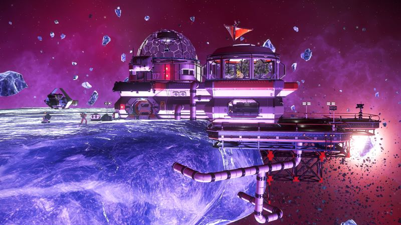
Bases espaciales para compartir
Sube tus bases orbitales al servidor para que otros jugadores las visiten.
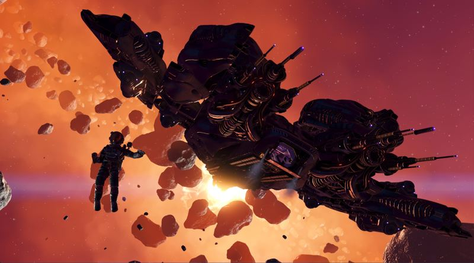
Chatarreo espacial
Mejor guía para extraer tecnología y minerales de restos de naves y cinturones de asteroides con la bobina Gravitino.
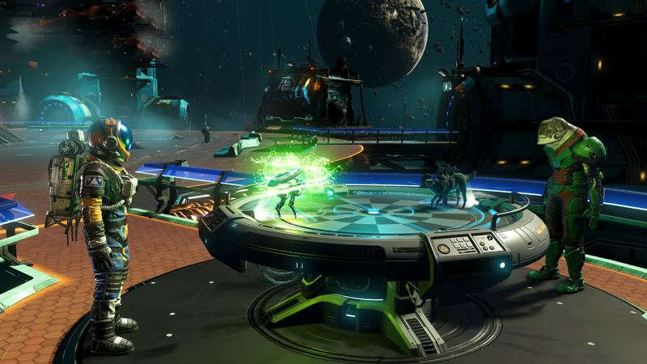
Batallas en el espacio profundo
Combates de criaturas en la Holo-Arena de las avanzadas espaciales, con nuevos rivales.
Información e imágenes de las notas oficiales de Hello Games. Toca una imagen para verla en grande. Fan page no oficial.